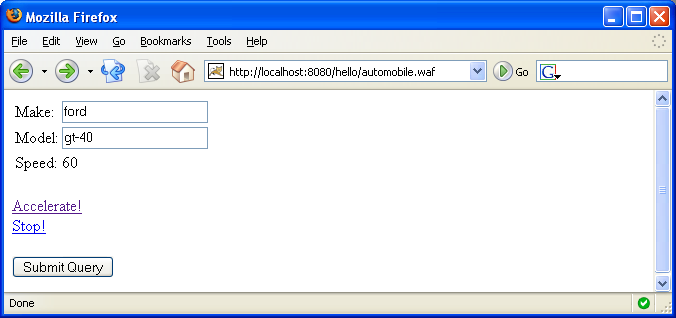

This tutorial expands on the example we covered in Tutorial: Part one. If Waffle only provided what was covered in that tutorial it would not be very interesting. So let's add onto the Automobile controller class and give it the ability to both accelerate and stop. We need to add a speed field so we can maintain the current speed of the automobile. We add a getter for speed so we can make sure that the speed is in fact increasing. And we add two event methods: void accelerate(String) and void stop(). Remember we added the "automobile" to the Registrar as a Session-Level component. So each user will have their own instance of the autombile controller and, more importantly, the controller will live for the life of the users session.
//
// Automobile.java
//
public class Automobile implements Serializable {
private String make = "ford";
private String model = "gt-40";
private int speed = 0;
public String getMake() {
return make;
}
public void setMake(String make) {
this.make = make;
}
public String getModel() {
return model;
}
public void setModel(String model) {
this.model = model;
}
public int getSpeed() {
return speed;
}
public void accelerate(int value) {
speed += value;
}
public void stop() {
speed = 0;
}
}
Next we will have to update the view to display the value of speed and also expose the two ActionMethod so they can be triggered by the users.
<%@ page contentType="text/html;charset=UTF-8" language="java" %>
<%@ taglib uri="http://java.sun.com/jsp/jstl/core" prefix="c" %>
<html>
<form action="automobile.waffle">
<table>
<tr>
<td>Make: </td>
<td>
<input type="text" value="<c:out value='${controller.make}'/>" name="make"/>
</td>
</tr>
<tr>
<td>Model: </td>
<td>
<input type="text" value="<c:out value='${controller.model}'/>" name="model"/>
</td>
</tr>
<tr>
<td>Speed: </td>
<td>
<c:out value='${controller.speed}'/>
</td>
</tr>
</table>
<br/>
<a href="automobile.waffle?method=accelerate|15">Accelerate!</a>
<br/>
<a href="automobile.waffle?method=stop">Stop!</a>
<br/><br/>
<input type="submit"/>
</form>
</html>
For this example we will concentrate on the more interesting of the two events, accelerate. The accelerate event is defined as automobile.waffle?event=accelerate|15. Let's dissect this to get a better understanding of what is going on. Starting from left to right we will break this request out and explain each piece separately:
| automobile | the Autombile.class controller was registered under the name "automobile" in the Registrar, so this name maps to that Controller |
| .waffle | Waffle's front controller (WaffleServlet) is mapped to the url-pattern "*.waffle", see web.xml |
| method | when Waffle handles requests it looks for the request parameter named method in order to determine if an ActionMethod should be fired on the Controller. |
| accelerate | this is the name of the ActionMethod that Waffle will attempt to execute on the Controller. |
| | | each | is used to delimit the argument list that should be used when invoking the ActionMethod. There is no limit to the number of arguments we can use. |
| 15 | this value will be passed as the argument to the ActionMethod being invoked (Waffle will automatically convert the String value to the appropriate type). |
In short, when Waffle handles this request it is equivalent to manually calling automobile.accelerate("15");. When running this you'll see:
Waffle's ability to fire ActionMethod on controller's as was shown earlier is a powerful feature. From a development perspective it is nice because it reduces much of the classic searching through the request parameters to determine what to do next. But Waffle provides even more capabilities for triggering events.
Notice the void accelerate(int) ActionMethod that we used earlier. Waffle can automatically convert the String values received into their correct type (i.e. String => Integer). However, this does not mean that ActionMethod can only be passed simple types like Strings, Numbers and Booleans. Many times a developer wants, or needs, to have access to either the javax.servlet.http.HttpServletRequest, javax.servlet.http.HttpServletResponse or javax.servlet.http.HttpSession. Waffle provides a simple way to handle this, if your ActionMethods have any of these type as a dependency they will automatically be injected.
And it does not stop there! Waffle allows you to directly reference parameters and attributes by name, in either the HttpServletRequest (parameter or attribute), HttpSession or ServletContext. So imagine we have a Map instance registered as an attribute in the user's session under the name "dictionary". We can have that Map instance passed directly as an argument to the ActionMethod we want fired. Let's write a simple controller class as an example:
//
// SampleAction.java
//
public class SampleController implements Serializable {
public void myActionMethod(Map dictionary) {
// do something with the dictionary ...
}
}
This controller has one ActionMethod: void myActionMethod(Map). Assume we have registered this controller under the name "sample". We can have Waffle fire this ActionMethod by submitting the url request sample.waffle?method=myActionMethod|{dictionary}. So just to make sure it's clear, we will dissect the value of the event parameter:
| myActionMethod | this is the name of the ActionMethod that Waffle will invoke on the controller. |
| | | the delimiter between ActionMethod name and arguments |
| {dictionary} | this is referencing the "dictionary" attribute registered to the HttpSession. It is equivalent to calling (Map)httpSession.getAttribute("dictionary");. But remember Waffle will search for dictionary as a key in 1) request parameters 2) request attribute 3) session attribute 4) servletContext attribute |
Waffle will react differently depending on what is returned, or thrown, from an ActionMethod after it has been invoked. Below we define defines how each case is handled in the Waffle framework:
Waffle determines which ActionMethod to invoke by examining the Controller with reflection. If your Controller contains an overloaded method (same name and same number of arguments) Waffle may not be able to determine which ActionMethod should be fired. For example assume you have the following two methods defined in an Controller:
public void save(String name, Object object); public void save(String color, Map dictionary);
Attempting to invoke the ActionMethod method=save|hello|{dictionary} will cause an AmbiguousMethodSignatureException to be thrown because Waffle will not be able to determine which of the save methods should be invoked. However, the ActionMethod method=save|foo|bar will invoke the first save method, void save(String, Object), without incident. Why? Because the String value "bar" is not assignable (and cannot be automatically converted) to the Map class, so no ambiguity will exist.